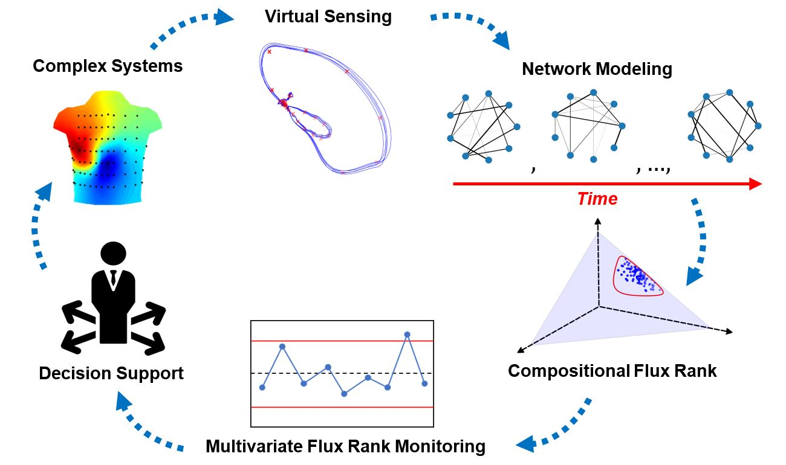

Software Toolbox
Disclaimer: This material is presented to ensure timely dissemination of scholarly and technical work. Copyright and all rights therein are retained by authors or by other copyright holders. All person copying this information are expected to adhere to the terms and constraints invoked by each author's copyright. In most cases, these works may not be reposted without the explicit permission of the copyright holder.
Please also see my tutorials on "Nonlinear Dynamics, Recurrence Analysis, and Complex Networks"
Part I – Nonlinear dynamical systems and chaos
Part II – Recurrence analysis of complex systems
Part III – Multiscale recurrence analysis
Part IV – Recurrence and complex networks


Presentation slides:Click here for presentation slides
DOI:10.13140/RG.2.2.24336.51200

If you find this demo useful, please cite the following papers:
[1] H. Yang, "Multiscale Recurrence Quantification Analysis of Spatial Vectorcardiogram (VCG) Signals," IEEE Transactions on Biomedical Engineering, Vol. 58, No. 2, p339-347, 2011 DOI: 10.1109/TBME.2010.2063704
[2] A. Meyers, M. Buqammaz, and H. Yang, "Cross Recurrence Analysis for Pattern Matching of Multidimensional Physiological Signals," Chaos: An Interdisciplinary Journal of Nonlinear Science (Feature Article), Vol. 30, No. 12, p.123125, DOI: 10.1063/5.0030838
Also available from: https://www.researchgate.net/publication/346926956_Cross_Recurrence_Analysis_for_Pattern_Matching_of_Multidimensional_Physiological_Signals

If you find this demo useful, please cite the following sources:
[1] A. Krall, D. Finke, and H. Yang, "Virtual Sensing Network for Statistical Process Monitoring," IISE Transactions, 2022, p.1-30, DOI: 10.1080/24725854.2022.2148779
[2] Krall, Alexander, Finke, Dan, and Yang,Hui. (2022). Virtual Sensing Network for Statistical Process Monitoring. Software Package in Zenodo. https://doi.org/10.5281/zenodo.7311124

Illustration of VSN network model for sensor-based process monitoring. Physical sensors produce time-varying signals. Virtual sensors (shown in red) are placed within the signal space to produce a set of dynamic network profiles. These network profiles have their flux rank extracted and monitored for decision support.
If you find this demo useful, please cite the following sources:
[1] Hui Yang (2023). “Mining Nonlinear Dynamics in Operational Data for Process Improvement”, INFORMS TutORials in Operations Research, pages 1-24. DOI: 10.1287/educ.2023.0261
[2] Hui Yang (2023). Logistic map and bifurcation diagram (https://www.mathworks.com/matlabcentral/fileexchange/135932-logistic-map-and-bifurcation-diagram), MATLAB Central File Exchange. Retrieved September 26, 2023.

If you find this demo useful, please cite the following sources:
[1] H. Yang and G. Liu, “Self-organized topology of recurrence-based complex networks,” Chaos, Vol. 23, No. 4, p. 043116, 2013, DOI: 10.1063/1.4829877G.
[2] Liu and H. Yang, "Self-organizing network for group variable selection and predictive modeling,” Annals of Operations Research, Vol. 263, No. 1, p. 119-140, 2017. DOI: 10.1007/s10479-017-2442-2
[3] Hui Yang (2024). Self-organizing Network (https://www.mathworks.com/matlabcentral/fileexchange/172685-self-organizing-network), MATLAB Central File Exchange. Retrieved September 13, 2024.

Author:
Dr. Hui Yang is a Professor of Industrial and Manufacturing Engineering, Biomedical Engineering at Penn State, and is affiliated with Penn State Cancer Institute (PSCI), Clinical and Translational Science Institute (CTSI), Institute for Computational and Data Sciences (ICDS), CIMP-3D. Currently, he serves as the director of NSF Center for Health Organization Transformation (CHOT). Prior to joining Penn State in 2015, he was an Assistant Professor in the Department of Industrial and Management Systems Engineering at the University of South Florida from 2009 to 2015.
Dr. Yang's research interests focus on sensor-based modeling and analysis of complex systems for process monitoring, process control, system diagnostics, condition prognostics, quality improvement, and performance optimization. His research program is supported by National Science Foundation (including the prestigious NSF CAREER award), National Institute of Health (NIH), National Institute of Standards and Technology (NIST), MxD-The Digital Manufacturing and Cybersecurity Institute, CESMII-The Smart Manufacturing Institute, Fulbright Foundation, Lockheed Martin, IBM, GM, NSF center for e-Design, Susan Koman Foundation, Highmark, Siemens Healthineers, NSF Center for Healthcare Organization Transformation, Institute of Cyberscience, James A. Harley Veterans Hospital, and Florida James and Esther King Biomedical research program. His research group received a number of best paper awards and best poster awards from IISE, IEEE EMBC, IEEE CASE, and INFORMS Conferences.
Dr. Yang is the president (2017-2018) of IISE Data Analytics and Information Systems Society, the president (2015-2016) of INFORMS Quality, Statistics and Reliability (QSR) society, and the program chair of 2016 Industrial and Systems Engineering Research Conference (ISERC). He is also the Editor-in-Chief (EIC) for IISE Transactions Healthcare Systems Engineering, as well as an Associate Editor (AE) for IISE Transactions, IEEE Journal of Biomedical and Health Informatics (JBHI), ASME Journal of Computing and Information Science in Engineering (JCISE), IEEE Transactions on Automation Science and Engineering (TASE), IEEE Robotics and Automation Letters (RA-L), Quality Technology & Quantitative Management, and an Associate Editor for the Proceedings of IEEE CASE, IEEE EMBC, and IEEE BHI. He serves as a referee for a diverse set of top tier research journals such as Physical Review, IEEE Transactions on Biomedical Engineering, IEEE Journal of Biomedical and Health Informatics, Biophysical Journal, IIE Transactions, Technometrics, and IEEE Transactions on Automation Science and Engineering. He is a professional member of IEEE, IEEE EMBS, INFORMS, IIE, ASEE and American Heart Association (AHA).